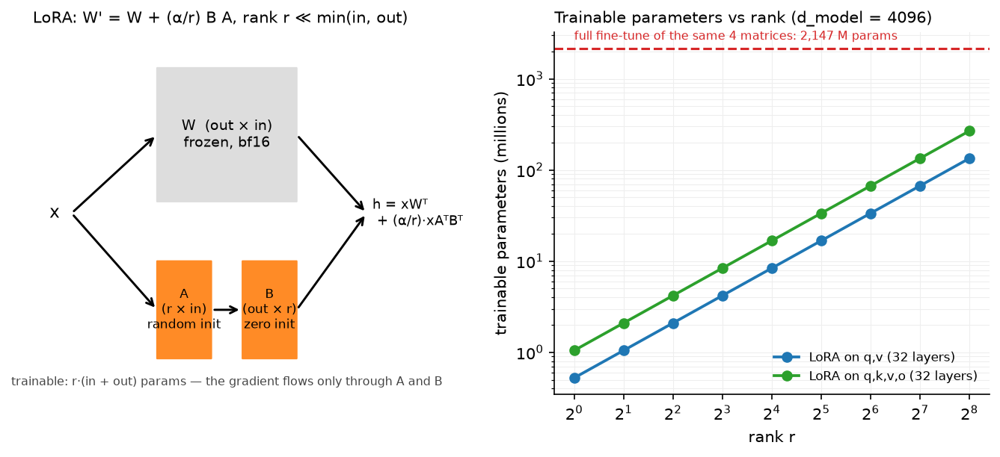

Fine-tuning & LoRA¶
Why this matters at staff level. Almost no one pretrains; almost everyone fine-tunes. Interviews use this topic to check three things at once: the memory arithmetic of training (why full fine-tuning a 7B model needs ~70 GB and LoRA needs ~16 GB), the linear algebra of a low-rank update (and why \(B\) starts at zero), and the serving consequences (merged vs unmerged, multi-LoRA batching). Strong signal is writing
LoRALinearwith merge/unmerge from a blank file and being able to argue when not to use LoRA.
TL;DR: the interview card¶
- Full fine-tuning memory (Adam, bf16 params + fp32 master): ~2 (bf16 weights) + 4 (fp32 master) + 4 (grad, or 2 in bf16) + 8 (Adam \(m\), \(v\)) \(\approx\) 16–18 bytes per parameter, plus activations. A 7B model: ~112–126 GB. Details in training systems.
- LoRA: \(W' = W + \frac{\alpha}{r}BA\) with \(A\in\R^{r\times d_{in}}\), \(B\in\R^{d_{out}\times r}\), \(r\ll\min(d_{in},d_{out})\). Freeze \(W\); train \(A, B\): optimiser states and gradients exist only for \(r(d_{in}+d_{out})\) parameters, typically 0.1–1% of the model.
- \(B = 0\) at init so \(\Delta W = 0\) and the adapted model is the base model at step 0; \(A\) is Kaiming/Gaussian so gradients to \(B\) are non-zero. Both zero would be a dead saddle: \(\nabla_A \propto B^\top(\cdot) = 0\) and \(\nabla_B \propto (\cdot)A^\top = 0\).
- \(\alpha/r\) scaling keeps the update magnitude roughly constant as you change \(r\), so the learning rate need not be re-tuned per rank. Common: \(r = 8\)–64, \(\alpha = 2r\).
- Which matrices: originally \(W_q, W_v\); modern practice adapts all of \(q,k,v,o\) and often the MLP too, at lower rank. Spreading the rank budget over more matrices beats concentrating it in fewer.
- Merging: \(W \leftarrow W + \frac{\alpha}{r}BA\) gives a plain Linear with zero inference overhead (unlike adapters). Unmerge by subtracting. Merged models cannot be batched with other adapters; unmerged multi-LoRA can (S-LoRA/Punica style).
- QLoRA: frozen base in 4-bit NF4 + double quantisation + paged optimisers, LoRA in bf16: 65B fine-tuning on one 48 GB GPU, matching 16-bit fine-tuning quality.
- Adapters (Houlsby): \(h \leftarrow h + W_{up}\sigma(W_{down}h)\), sequential compute at inference, cannot merge. Prompt tuning: \(n\) learned input embeddings. Prefix tuning: learned K/V at every layer. DoRA: split \(W\) into magnitude and direction, LoRA the direction.
- Catastrophic forgetting: full FT on a narrow corpus degrades general ability; LoRA forgets less (smaller effective update), but the real fix is data mixing (replay 5–30% general data) and low LR.
1. Intuition first¶
You have a 7B pretrained model and 50,000 examples of your task. Full fine-tuning updates all 7 billion parameters. Two problems: memory (you need optimiser state for every parameter, about 16 bytes each, so >100 GB) and plurality (if you have 40 customers, you now store 40 copies of a 14 GB model).
The observation behind LoRA: the update \(\Delta W\) that adapts a pretrained model to a task has low "intrinsic rank". The weights themselves are full rank and carry everything the model knows, but the change needed to specialise is a small correction. So parameterise the correction as a product of two thin matrices.
Take a tiny concrete case: \(W \in \R^{4\times 4}\) and \(r = 1\). Then \(A \in \R^{1\times4}\) (4 numbers), \(B \in \R^{4\times 1}\) (4 numbers): 8 trainable parameters instead of 16, and the update \(BA\) is a rank-1 outer product. Scale to \(d = 4096\): \(W\) has 16.8M parameters; \(r = 8\) gives \(8\times(4096+4096) = 65{,}536\), i.e. 0.4%. The forward pass computes \(x(BA)^\top\) as \((xA^\top)B^\top\): project down to \(r\), then back up. That costs \(2r(d_{in}+d_{out})\) FLOPs per token, the same 0.4% of the base matmul.

Left: the frozen path and the trainable low-rank path sum into the same output; only \(A\) and \(B\) receive gradients. Right: trainable parameters versus rank for a Llama-2-7B-shaped attention stack, even \(r = 256\) on all four projections is an order of magnitude below full fine-tuning of the same matrices.
The second idea that makes LoRA a systems win: because the update is additive and linear, you can fold it into \(W\) after training. The served model is then architecturally identical to the base model, with no extra layers and no extra latency. Adapters (the earlier bottleneck-MLP approach) cannot do this: they are nonlinear insertions and add sequential work to every forward pass forever.
2. The math¶
2.1 Memory arithmetic of full fine-tuning¶
Per parameter, in a standard mixed-precision Adam setup:
| Tensor | Precision | Bytes/param |
|---|---|---|
| Weights (compute copy) | bf16 | 2 |
| Master weights | fp32 | 4 |
| Gradients | fp32 (or bf16) | 4 (or 2) |
| Adam \(m\) | fp32 | 4 |
| Adam \(v\) | fp32 | 4 |
| Total | 18 (or 16) |
For \(N = 7\times10^9\) that is 112–126 GB of state before activations: two to four 80 GB GPUs with ZeRO sharding, for a model that infers on one. With LoRA, only the adapter parameters \(N_{\text{LoRA}} = \sum_{\text{adapted}} r(d_{in}+d_{out})\) carry gradient and optimiser state:
For 7B with \(r=16\) on \(q,k,v,o\) across 32 layers: \(N_{\text{LoRA}} = 32\cdot4\cdot16\cdot(4096+4096) \approx 16.8\)M, so 14 GB (frozen) + 0.27 GB (states) ≈ 14.3 GB. QLoRA replaces the 14 GB with ~3.5 GB of NF4, which is how 65B fits in 48 GB.
Activations still matter. LoRA does not reduce activation memory much: you still backpropagate through the whole network to reach the adapters (the gradient must flow through frozen layers, even though it is not stored for them). You save the activations that only weight-gradients need, but gradient checkpointing remains standard.
2.2 The LoRA update and its gradients¶
Let \(s = \alpha/r\) and \(u = xA^\top \in \R^{\cdot\times r}\) (the "down-projection"). With upstream gradient \(g = \partial\mathcal{L}/\partial h\):
Why \(B = 0\), \(A \ne 0\). At initialisation \(\Delta W = BA = 0\), so the adapted model exactly reproduces the base model: fine-tuning starts from the pretrained function, not from a perturbed one. The gradients above show why you cannot zero both: \(\partial\mathcal L/\partial A \propto gB = 0\) if \(B=0\), but \(\partial\mathcal L/\partial B \propto u = xA^\top \ne 0\) as long as \(A \ne 0\). So \(B\) moves first, then \(A\) receives gradient. Zero-initialising \(A\) instead (and randomising \(B\)) also works in principle but is worse in practice: the first updates to \(A\) are driven by a random \(B\) that it must then "chase".
Why \(\alpha/r\). \(BA\) with \(A\) initialised at variance \(\sigma^2\) and \(B\) growing from zero produces an update whose typical entry scales with \(r\) (a sum of \(r\) products). Dividing by \(r\) makes the update's scale approximately rank-independent, so a learning rate tuned at \(r = 8\) transfers to \(r = 64\). In practice \(\alpha\) is a second knob: the effective learning rate of the adapter path is proportional to \(\alpha/r\).
Expressivity. \(\Delta W\) has rank at most \(r\). If the task genuinely needs a full-rank update (learning a new language, a new modality, a large distribution shift), LoRA underfits: this is the precise statement behind "LoRA is worse than full FT for continued pretraining but comparable for instruction tuning". Adapting more matrices at lower rank increases the total rank budget across the network, which is why modern practice spreads the budget.
2.3 Merging and multi-LoRA serving¶
Merging is exact:
so a merged model has identical outputs (up to float rounding) and zero overhead. The cost is that the merged weight is specific to one adapter. For serving many adapters, keep the base frozen and shared and compute the low-rank path per request:
where \(i_b\) is request \(b\)'s adapter id. The big GEMM \(xW^\top\) is batched across all requests regardless of adapter; only the small \(r\)-dimensional GEMMs are gathered per request. That is the entire idea behind S-LoRA and Punica: thousands of adapters served from one base model, because \(r(d_{in}+d_{out})\) is megabytes, not gigabytes.
2.4 Adapters, prompt tuning, prefix tuning¶
Bottleneck adapter (Houlsby et al., 2019), inserted after a sublayer:
with \(W_{up}\) zero-initialised so the block starts as the identity. Parameters \(2rd\) per insertion (comparable to LoRA) but the computation is sequential: it cannot be folded into an existing matmul, so it adds latency at every layer forever (the original paper and follow-ups measure 5–30% depending on batch size and \(r\)).
Prompt tuning (Lester et al., 2021): prepend \(n_v\) learned vectors to the input embeddings; parameters \(n_v d\) (e.g. \(100\times4096 = 410\)k). Everything else frozen. It is the most parameter-efficient method and the weakest: it only works well at large scale (>10B) and trains slowly.
Prefix tuning (Li & Liang, 2021): prepend learned keys and values at every attention layer, so attention becomes
with parameters \(L\cdot 2\cdot n_p\cdot H_{kv}\cdot d_h\). Every real token sees \(n_p\) extra positions, but no extra tokens enter the residual stream. At inference a prefix is just \(n_p\) extra entries in the KV cache: a "virtual prompt" that was never tokenised. It costs a little attention compute per token, forever, and it consumes context budget.
DoRA (literacy): decompose \(W = m\frac{V}{\|V\|_c}\) into a per-column magnitude \(m\) and a direction \(V\), train \(m\) directly and apply LoRA to \(V\). The motivation is that full fine-tuning changes magnitude and direction with a different correlation than LoRA does; DoRA recovers some of the gap at small \(r\) and still merges.
2.5 Catastrophic forgetting¶
Fine-tuning minimises loss on \(\mathcal D_{\text{task}}\) with no term for \(\mathcal D_{\text{pretrain}}\), so parameters drift wherever it helps the task, including where it hurts general ability. Three controls, in order of effectiveness:
- Data mixing / replay: include 5–30% of general instruction or pretraining data in the fine-tuning mixture. This directly restores the missing term in the objective.
- Smaller effective update: low LR, few epochs, and parameter-efficient methods. LoRA's rank-\(r\) constraint acts as an implicit regulariser. It forgets less and it also learns less.
- Explicit regularisation: KL to the base model's outputs (the same term post-training uses; see Part VII) or an L2 pull toward base weights.
Measure it: always evaluate a fine-tuned model on a held-out general suite, not only on the task. A model that gained 8 points on your task and lost 12 on MMLU is usually a regression.
3. Implementation¶
3.1 LoRALinear¶
class LoRALinear(nn.Module):
def __init__(self, base: nn.Linear, r: int, alpha: float, dropout: float = 0.0) -> None:
super().__init__()
self.base = base
for p in self.base.parameters():
p.requires_grad_(False) # W and b are frozen
in_f, out_f = base.in_features, base.out_features
self.r, self.scaling = r, alpha / r
self.lora_A = nn.Parameter(torch.empty(r, in_f)) # (r, in)
self.lora_B = nn.Parameter(torch.zeros(out_f, r)) # (out, r) zero => ΔW = 0 at init
nn.init.kaiming_uniform_(self.lora_A, a=math.sqrt(5))
self.merged = False
def forward(self, x: torch.Tensor) -> torch.Tensor:
y = self.base(x) # (…, out) frozen path
if self.merged:
return y
low_rank = self.dropout(x) @ self.lora_A.T # (…, r) project down
return y + self.scaling * (low_rank @ self.lora_B.T) # (…, out) project up
Three things to notice. The base parameters are frozen in the constructor, so a caller
cannot forget. lora_B is zeros and lora_A is Kaiming, §2.2. The forward never forms
\(BA\) (which would be \(d_{out}\times d_{in}\)); it does two thin matmuls, which is the whole
FLOP argument.
@torch.no_grad()
def merge(self) -> None:
if not self.merged:
self.base.weight += self.delta_weight() # (out, in)
self.merged = True
merge materialises \(\frac{\alpha}{r}BA\) once and folds it in; forward then short-circuits
to the base path. unmerge subtracts it back so training can continue. The test asserts
merged == unmerged outputs and that unmerging restores the original weight bitwise-close.
3.2 Applying it to an attention module and freezing¶
def apply_lora(model, r, alpha, target_names=("q_proj", "v_proj")):
wrapped = []
for parent_name, parent in list(model.named_modules()):
for attr, child in list(parent.named_children()):
if isinstance(child, nn.Linear) and attr in target_names:
setattr(parent, attr, LoRALinear(child, r, alpha))
wrapped.append(f"{parent_name}.{attr}" if parent_name else attr)
return wrapped
def mark_only_lora_trainable(model):
for name, p in model.named_parameters():
p.requires_grad_("lora_A" in name or "lora_B" in name)
apply_lora swaps named nn.Linear children in place, the module tree keeps its shape, so
the rest of the model (and any saved activation hooks) is untouched. The test applies it to
the GroupedQueryAttention module of chapter 3, checks
that k_proj is untouched, that exactly four tensors require grad, that the module's output
is unchanged at init, and that after a backward pass lora_B.grad exists while
base.weight.grad is None.
lora_state_dict extracts only the adapter tensors. That is the artefact you ship per task:
kilobytes to megabytes rather than gigabytes.
3.3 Multi-LoRA batching¶
def forward(self, x: torch.Tensor, adapter_ids: torch.Tensor) -> torch.Tensor:
A = self.lora_A[adapter_ids] # (B, r, in) gather this request's adapter
Bm = self.lora_B[adapter_ids] # (B, out, r)
low = x @ A.transpose(1, 2) # (B, T, r)
return self.base(x) + self.scaling * (low @ Bm.transpose(1, 2)) # (B, T, out)
self.base(x) is one dense GEMM for the whole batch; the per-request work is two batched
\(r\)-dimensional GEMMs. The test sends adapter ids [0, 2] and checks each row matches what
that adapter alone would produce.
3.4 Adapters and prefix tuning¶
class BottleneckAdapter(nn.Module):
def forward(self, h: torch.Tensor) -> torch.Tensor:
z = F.gelu(self.down(h)) # (B, T, r)
return h + self.up(z) # (B, T, d_model) residual so init == identity
def attention_with_prefix(q, k, v, prefix_k, prefix_v):
k_all = torch.cat([prefix_k, k], dim=2) # (B, H, P+T, d_head)
v_all = torch.cat([prefix_v, v], dim=2) # (B, H, P+T, d_head)
scores = q @ k_all.transpose(-2, -1) / math.sqrt(d_head) # (B, H, T, P+T)
causal = torch.tril(torch.ones(T, T, dtype=torch.bool)) # (T, T) for the real keys
allowed = torch.cat([torch.ones(T, P, dtype=torch.bool), causal], dim=1) # (T, P+T)
scores = scores.masked_fill(~allowed, float("-inf"))
return torch.softmax(scores, dim=-1) @ v_all # (B, H, T, d_head)
The mask is the interesting line: prefix positions are visible to every query (they are not part of the causal ordering), while the real keys keep the lower-triangular rule. The test verifies that \(P = 0\) reduces exactly to causal attention and that truncating the sequence does not change earlier outputs.
Full implementation: src/mlbook/finetune/lora.py
"""LoRA: low-rank adaptation of a frozen linear layer.
h = x W^T + (α / r) · x A^T B^T, A ∈ R^{r×in}, B ∈ R^{out×r}, r ≪ min(in, out)
B is initialised to zero so the adapted model equals the base model at step 0; A is
Gaussian/Kaiming so the gradient to B is non-zero. Merging W' = W + (α/r) B A gives
a plain Linear with no inference overhead; unmerging subtracts it back.
"""
from __future__ import annotations
import math
import torch
import torch.nn as nn
class LoRALinear(nn.Module):
"""A frozen ``nn.Linear`` plus a trainable rank-``r`` update."""
def __init__(self, base: nn.Linear, r: int, alpha: float, dropout: float = 0.0) -> None:
super().__init__()
self.base = base
for p in self.base.parameters():
p.requires_grad_(False) # W and b are frozen
in_f, out_f = base.in_features, base.out_features
self.r, self.scaling = r, alpha / r
self.lora_A = nn.Parameter(torch.empty(r, in_f)) # (r, in)
self.lora_B = nn.Parameter(torch.zeros(out_f, r)) # (out, r) zero => ΔW = 0 at init
nn.init.kaiming_uniform_(self.lora_A, a=math.sqrt(5))
self.dropout = nn.Dropout(dropout)
self.merged = False
def delta_weight(self) -> torch.Tensor:
"""ΔW = (α/r) · B A, shape (out, in)."""
return self.scaling * (self.lora_B @ self.lora_A) # (out, in)
def forward(self, x: torch.Tensor) -> torch.Tensor:
"""(…, in) -> (…, out)."""
y = self.base(x) # (…, out) frozen path (already includes ΔW when merged)
if self.merged:
return y
low_rank = self.dropout(x) @ self.lora_A.T # (…, r) project down
return y + self.scaling * (low_rank @ self.lora_B.T) # (…, out) project up
@torch.no_grad()
def merge(self) -> None:
"""Fold ΔW into the base weight for zero-overhead inference."""
if not self.merged:
self.base.weight += self.delta_weight()
self.merged = True
@torch.no_grad()
def unmerge(self) -> None:
"""Undo ``merge`` so training can continue on the separate A, B."""
if self.merged:
self.base.weight -= self.delta_weight()
self.merged = False
def apply_lora(model: nn.Module, r: int, alpha: float, target_names: tuple[str, ...] = ("q_proj", "v_proj")) -> list[str]:
"""Replace every ``nn.Linear`` whose attribute name is in ``target_names`` with a LoRALinear.
Returns the dotted names that were wrapped. Then call ``mark_only_lora_trainable``.
"""
wrapped: list[str] = []
for parent_name, parent in list(model.named_modules()):
for attr, child in list(parent.named_children()):
if isinstance(child, nn.Linear) and attr in target_names:
setattr(parent, attr, LoRALinear(child, r, alpha))
wrapped.append(f"{parent_name}.{attr}" if parent_name else attr)
return wrapped
def mark_only_lora_trainable(model: nn.Module) -> None:
"""Freeze everything except parameters named ``lora_A`` / ``lora_B``."""
for name, p in model.named_parameters():
p.requires_grad_("lora_A" in name or "lora_B" in name)
def lora_state_dict(model: nn.Module) -> dict[str, torch.Tensor]:
"""Only the adapter tensors: what you ship per task (kilobytes to megabytes)."""
return {k: v.detach().clone() for k, v in model.state_dict().items() if "lora_" in k}
def count_parameters(model: nn.Module) -> tuple[int, int]:
"""(trainable, total) parameter counts."""
total = sum(p.numel() for p in model.parameters())
trainable = sum(p.numel() for p in model.parameters() if p.requires_grad)
return trainable, total
class MultiLoRALinear(nn.Module):
"""One frozen base, ``n_adapters`` LoRA pairs, and a per-example adapter id (multi-LoRA serving).
y_b = x_b W^T + (α/r) x_b A_{id_b}^T B_{id_b}^T — the base matmul is shared across the
batch; only the small low-rank matmuls are gathered per request (the idea behind
Punica / S-LoRA style serving).
"""
def __init__(self, base: nn.Linear, n_adapters: int, r: int, alpha: float) -> None:
super().__init__()
self.base = base
for p in self.base.parameters():
p.requires_grad_(False)
self.scaling = alpha / r
self.lora_A = nn.Parameter(torch.randn(n_adapters, r, base.in_features) / math.sqrt(base.in_features)) # (n_adapters, r, in)
self.lora_B = nn.Parameter(torch.zeros(n_adapters, base.out_features, r)) # (n_adapters, out, r)
def forward(self, x: torch.Tensor, adapter_ids: torch.Tensor) -> torch.Tensor:
"""x: (B, T, in), adapter_ids: (B,) long -> (B, T, out)."""
A = self.lora_A[adapter_ids] # (B, r, in) gather this request's adapter
Bm = self.lora_B[adapter_ids] # (B, out, r)
low = x @ A.transpose(1, 2) # (B, T, r)
return self.base(x) + self.scaling * (low @ Bm.transpose(1, 2)) # (B, T, out)
Full implementation: src/mlbook/finetune/adapters.py
"""Bottleneck adapters (Houlsby et al. 2019): small residual MLPs inserted after a sublayer.
h' = h + W_up · σ(W_down · h), W_down ∈ R^{r×d}, W_up ∈ R^{d×r}, r ≪ d
``W_up`` starts at zero so the adapter is the identity at initialisation. Unlike
LoRA, an adapter adds sequential compute at inference and cannot be merged away.
"""
from __future__ import annotations
import torch
import torch.nn as nn
import torch.nn.functional as F
class BottleneckAdapter(nn.Module):
"""Residual down-project / nonlinearity / up-project block."""
def __init__(self, d_model: int, r: int) -> None:
super().__init__()
self.down = nn.Linear(d_model, r) # (d -> r)
self.up = nn.Linear(r, d_model) # (r -> d)
nn.init.zeros_(self.up.weight)
nn.init.zeros_(self.up.bias)
def forward(self, h: torch.Tensor) -> torch.Tensor:
"""(B, T, d_model) -> (B, T, d_model)."""
z = F.gelu(self.down(h)) # (B, T, r)
return h + self.up(z) # (B, T, d_model) residual so init == identity
class AdaptedSublayer(nn.Module):
"""Wrap any ``(B, T, d) -> (B, T, d)`` sublayer with a frozen body and a trainable adapter."""
def __init__(self, sublayer: nn.Module, d_model: int, r: int) -> None:
super().__init__()
self.sublayer = sublayer
for p in self.sublayer.parameters():
p.requires_grad_(False)
self.adapter = BottleneckAdapter(d_model, r)
def forward(self, x: torch.Tensor) -> torch.Tensor:
"""(B, T, d_model) -> (B, T, d_model)."""
return self.adapter(self.sublayer(x)) # (B, T, d_model)
Full implementation: src/mlbook/finetune/prefix_tuning.py
"""Prefix tuning and prompt tuning: steer a frozen model with learned virtual tokens.
Prompt tuning (Lester et al. 2021): prepend ``n_virtual`` learned embeddings to the
input embeddings; everything else is frozen. Parameters: n_virtual · d_model.
Prefix tuning (Li & Liang 2021): prepend learned key/value vectors at *every* layer's
attention, so each real token attends to ``n_prefix`` extra positions:
softmax( q [P_K ; K]^T / √d ) [P_V ; V]
Parameters: L · 2 · n_prefix · H_kv · d_head. No extra tokens enter the residual
stream, and the prefix behaves like a cached prompt that was never actually written.
"""
from __future__ import annotations
import math
import torch
import torch.nn as nn
class PromptTuning(nn.Module):
"""Learned virtual-token embeddings prepended to the token embeddings."""
def __init__(self, n_virtual: int, d_model: int) -> None:
super().__init__()
self.prompt = nn.Parameter(torch.randn(n_virtual, d_model) * 0.02) # (n_virtual, d_model)
def forward(self, token_embeddings: torch.Tensor) -> torch.Tensor:
"""(B, T, d_model) -> (B, n_virtual + T, d_model)."""
B = token_embeddings.shape[0]
prompt = self.prompt[None].expand(B, -1, -1) # (B, n_virtual, d_model)
return torch.cat([prompt, token_embeddings], dim=1) # (B, n_virtual + T, d_model)
class PrefixKV(nn.Module):
"""Per-layer learned prefix keys and values for one attention layer."""
def __init__(self, n_prefix: int, n_kv_heads: int, d_head: int) -> None:
super().__init__()
self.prefix_k = nn.Parameter(torch.randn(n_kv_heads, n_prefix, d_head) * 0.02) # (H_kv, P, d_head)
self.prefix_v = nn.Parameter(torch.randn(n_kv_heads, n_prefix, d_head) * 0.02) # (H_kv, P, d_head)
def expand(self, B: int) -> tuple[torch.Tensor, torch.Tensor]:
"""Broadcast to a batch: (B, H_kv, P, d_head) each."""
return self.prefix_k[None].expand(B, -1, -1, -1), self.prefix_v[None].expand(B, -1, -1, -1)
def attention_with_prefix(
q: torch.Tensor, k: torch.Tensor, v: torch.Tensor, prefix_k: torch.Tensor, prefix_v: torch.Tensor
) -> torch.Tensor:
"""Causal attention where every query also sees the ``P`` prefix positions.
Args:
q, k, v: (B, H, T, d_head) (K/V already expanded to H heads).
prefix_k, prefix_v: (B, H, P, d_head).
Returns:
(B, H, T, d_head).
"""
B, H, T, d_head = q.shape
P = prefix_k.shape[2]
k_all = torch.cat([prefix_k, k], dim=2) # (B, H, P+T, d_head)
v_all = torch.cat([prefix_v, v], dim=2) # (B, H, P+T, d_head)
scores = q @ k_all.transpose(-2, -1) / math.sqrt(d_head) # (B, H, T, P+T)
causal = torch.tril(torch.ones(T, T, dtype=torch.bool)) # (T, T) for the real keys
allowed = torch.cat([torch.ones(T, P, dtype=torch.bool), causal], dim=1) # (T, P+T)
scores = scores.masked_fill(~allowed, float("-inf"))
return torch.softmax(scores, dim=-1) @ v_all # (B, H, T, d_head)
How you'd test it. LoRA is the identity at init and stops being so once \(B\) is perturbed; merged output equals unmerged output and unmerge restores the weight; applying LoRA to a real attention module leaves non-target projections alone and makes only adapter tensors trainable; multi-LoRA picks the right adapter per row; the adapter is the identity at init and freezes its body; prefix tuning with \(P=0\) equals causal attention.
Retype by hand¶
| Symbol | File | Target time |
|---|---|---|
LoRALinear (init, forward, merge, unmerge) |
src/mlbook/finetune/lora.py |
10 minutes |
mark_only_lora_trainable, apply_lora |
src/mlbook/finetune/lora.py |
8 minutes |
MultiLoRALinear.forward |
src/mlbook/finetune/lora.py |
7 minutes |
BottleneckAdapter |
src/mlbook/finetune/adapters.py |
5 minutes |
attention_with_prefix |
src/mlbook/finetune/prefix_tuning.py |
10 minutes |
Fine to just read: lora_state_dict, count_parameters, AdaptedSublayer, PromptTuning,
PrefixKV.
Check with python -m pytest tests/test_finetune_lora.py tests/test_finetune_adapters.py tests/test_finetune_prefix.py -q
(test_lora_is_identity_at_init_then_changes_after_update,
test_merge_equals_unmerged_and_unmerge_restores,
test_apply_lora_to_attention_and_only_lora_trainable,
test_multi_lora_selects_adapter_per_example,
test_adapter_is_identity_at_init, test_adapted_sublayer_freezes_body_trains_adapter,
test_prompt_tuning_prepends_virtual_tokens,
test_prefix_attention_with_empty_prefix_equals_causal_attention,
test_prefix_changes_output_and_respects_causality).
4. Systems view: cost, failure modes, trade-offs¶
Memory, side by side (7B model, bf16, Adam, \(r=16\) on \(q,k,v,o\)):
| Method | Frozen base | Trainable | Optimiser+grad | Total state | Fits on |
|---|---|---|---|---|---|
| Full FT | none | 7B | ~112 GB | ~126 GB | 2–4×80 GB + ZeRO |
| LoRA | 14 GB | 17M | 0.27 GB | ~14.3 GB | 1×24 GB (with checkpointing) |
| QLoRA (NF4) | ~3.6 GB | 17M | 0.27 GB | ~3.9 GB | 1×16 GB |
| Prompt tuning | 14 GB | 0.4M | 0.007 GB | ~14 GB | 1×24 GB |
Activations are excluded and dominate at long sequence length; gradient checkpointing trades ~30% compute for a large activation reduction and is standard for all rows above.
Inference cost.
| Method | Extra latency (merged) | Extra latency (unmerged) | Multi-tenant |
|---|---|---|---|
| LoRA | 0 | ~2–5% (two thin GEMMs) | yes, unmerged |
| Adapter | n/a (cannot merge) | 5–30% (sequential) | awkward |
| Prefix tuning | n/a | small attention cost + \(P\) cache slots | yes |
| Prompt tuning | n/a | \(n_v\) extra tokens of prefill and context | yes |
Failure modes.
| Failure | Symptom | Fix |
|---|---|---|
Forgot mark_only_lora_trainable |
memory blows up; base drifts | assert trainable parameter count before the first step |
| Merged, then kept training | the delta is applied twice on the next merge | guard with the merged flag (as in the code) |
| Rank too low for the task | train loss plateaus above full-FT loss | raise \(r\), adapt more matrices, or switch to full FT |
LoRA on embeddings/lm_head for a new language |
poor results | new tokens need real embedding training; see vocabulary adaptation in chapter 7 |
| LR copied from full FT | divergence | LoRA wants a higher LR (1e-4–3e-4 vs 1e-5–2e-5) because the adapter starts at zero |
| Merging a QLoRA adapter into the 4-bit base | quality drop from re-quantisation | dequantise the base to bf16, merge, then re-quantise (or serve unmerged) |
| No general-data replay | task gain, general regression | mix 5–30% general data; evaluate a general suite |
When to use what.
| Situation | Decision rule |
|---|---|
| Instruction tuning / style / format / tool use on a strong base | LoRA, \(r=16\)–64 on all attention + MLP projections |
| One GPU, large model, exploratory | QLoRA; accept ~20–30% slower steps for the memory |
| Teaching genuinely new knowledge or a new language | full fine-tuning or continued pretraining: a rank-\(r\) update cannot carry it (chapter 7) |
| Many customers, one base model | unmerged multi-LoRA serving; one adapter per tenant, megabytes each |
| One task, latency-critical | LoRA then merge; ship a plain model |
| Frozen model you cannot touch at all (API) | prompt tuning / prefix tuning, or just prompt engineering |
| Very small trainable budget, huge model | prompt tuning (works best above ~10B) |
5. In production¶
Microsoft: LoRA
Problem: GPT-3 175B full fine-tuning required 1.2 TB of optimiser state and a full model copy per task. Hu et al. (2021) froze \(W\) and trained a rank-\(r\) update, reporting a 10,000× reduction in trainable parameters and 3× lower GPU memory versus Adam full fine-tuning, with quality on par or better on GLUE/WikiSQL, and (the deployment argument) no inference latency because the update merges. Rejected alternative: adapters, which were already known to work but add sequential depth and measurable latency at small batch. Source: LoRA: Low-Rank Adaptation of Large Language Models (ICLR 2022, arXiv:2106.09685).
University of Washington: QLoRA
Problem: even LoRA needs the frozen base in 16-bit, so 65B did not fit on one GPU. Dettmers et al. (2023) combined a 4-bit NormalFloat base (information-theoretically suited to normally-distributed weights), double quantisation of the scale constants, and paged optimisers (using unified memory to survive gradient-checkpointing spikes), then trained LoRA adapters in bf16 on top. Result: 65B fine-tuned on a single 48 GB GPU with 16-bit fine-tuning quality, and the Guanaco model family. The trade-off they accepted: slower steps from dequantising the base on every forward. Source: QLoRA: Efficient Finetuning of Quantized LLMs (NeurIPS 2023, arXiv:2305.14314).
Anyscale: "fine-tuning is for form, not facts"
Anyscale's LoRA fine-tuning posts (2023) benchmarked LoRA against full fine-tuning across task families on Llama-2 models and found LoRA competitive on tasks that change output format and style (SQL generation, functional representation, classification) and weaker on tasks requiring new knowledge, consistent with the rank argument in §2.2. They also documented the serving economics that motivated multi-LoRA support in Ray/vLLM: one base model, many adapters, no per-tenant model copies. Treat the specific numbers as version-dependent; the qualitative conclusion has held. Source: Anyscale blog, "Fine-Tuning Llama-2: A Comprehensive Case Study for Tailoring Models to Unique Applications" and "Fine-Tuning LLMs: LoRA or Full-Parameter?" (2023).
Multi-LoRA serving: S-LoRA and Punica
Problem: serving thousands of task-specific adapters naively means thousands of model copies. S-LoRA (2023) and Punica (2023) keep one base model in GPU memory, page adapter weights between host and device, and use custom kernels (batched gather-GEMM over heterogeneous adapters) so requests using different adapters share the base GEMM in one batch. S-LoRA reports serving thousands of adapters concurrently with throughput improvements of an order of magnitude over naive per-adapter batching. This is the architecture behind multi-LoRA support in vLLM. Sources: S-LoRA: Serving Thousands of Concurrent LoRA Adapters (arXiv:2311.03285); Punica: Multi-Tenant LoRA Serving (MLSys 2024, arXiv:2310.18547).
6. Interview questions and strong answers¶
Why is \(B\) initialised to zero and \(A\) randomly? What breaks if you swap or zero both?
Zero \(B\) makes \(\Delta W = BA = 0\), so training starts exactly at the pretrained function, no initial perturbation of a model that already works. \(A\) must be non-zero because \(\partial\mathcal L/\partial B \propto xA^\top\); with both zero, both gradients vanish and you sit at a saddle forever. Swapping (zero \(A\), random \(B\)) also gives \(\Delta W = 0\) and does train, but the early updates to \(A\) are shaped by a random \(B\) it then has to compensate for, which is empirically worse. Staff follow-up: Does the choice affect the final rank used? Yes, with \(B=0\) the update grows out of the subspace \(A\) spans, so \(A\)'s initialisation scale interacts with the effective learning rate; that is part of what the \(\alpha/r\) factor normalises.
Derive the memory saving of LoRA over full fine-tuning for a 7B model.
Full FT with Adam: 2 bytes bf16 weights + 4 fp32 master + 4 grad + 8 Adam moments ≈ 18 bytes/param ≈ 126 GB. LoRA freezes the base (2 bytes/param = 14 GB, no grad, no optimiser state) and pays 16 bytes only on the adapter parameters; at \(r=16\) on four projections across 32 layers that is ~17M parameters ≈ 0.27 GB. So ~14.3 GB versus ~126 GB, roughly 9×. Staff follow-up: Why isn't it 400×, given 0.25% trainable parameters? Because the frozen base and the activations still dominate. QLoRA attacks the base (4-bit) and gradient checkpointing attacks the activations; those are the next two multipliers.
When would you not use LoRA?
When the adaptation needs a high-rank change: continued pretraining on a large new corpus, a new language with new tokens, a new modality, or a large domain shift. The update is capped at rank \(r\) per matrix, so it underfits; symptom is a training loss that plateaus above what full fine-tuning reaches. Also when I need to change embeddings or the vocabulary. Staff follow-up: Any middle ground? Raise rank and adapt every matrix (approaching full FT in expressivity), or do a short full-parameter continued pretraining stage and then LoRA for task specialisation on top.
Explain merged vs unmerged serving and when you would choose each.
Merged folds \(\frac{\alpha}{r}BA\) into \(W\): identical architecture, zero overhead, but the weights are now specific to one adapter. Unmerged keeps the low-rank path separate: ~2–5% slower, but one base model serves many adapters in the same batch because the dense GEMM is shared and only the thin \(r\)-dimensional GEMMs are per-request. Single dedicated task and tight latency → merge. Many tenants → unmerged multi-LoRA. Staff follow-up: What limits how many adapters you can serve? Host-to-device paging bandwidth for adapter weights and the efficiency of the batched gather-GEMM, not GPU memory: at \(r=16\), a 7B adapter is ~34 MB.
LoRA vs adapters vs prefix tuning: pick one and justify it.
LoRA, because it is the only one that merges to zero inference cost while having enough capacity for typical adaptation. Adapters have comparable parameter counts but add sequential compute at every layer permanently. Prefix tuning consumes KV-cache slots and attention compute per token and is harder to optimise; prompt tuning is the weakest and only competitive at very large scale. Staff follow-up: What would make you pick prefix tuning? If I must keep a single served model completely untouched and want the adaptation to live purely in the KV cache. Swapping "personas" per request with no weight changes at all is the case that fits.
You fine-tuned on 50k support tickets; task accuracy is up 9 points but MMLU dropped 11. What happened and what do you do?
Catastrophic forgetting: the objective had no term for general capability, so the model drifted toward the narrow distribution. Fixes in order: mix 10–30% general instruction data into the fine-tuning set (restores the missing term directly), lower the LR and the number of epochs, and use LoRA at modest rank rather than full FT. I would also check whether the ticket data is formatted so narrowly that the model learned a template. Staff follow-up: How would you measure forgetting continuously? A fixed general eval suite run at every checkpoint alongside task metrics, and a KL-to-base measurement on a general prompt set as an early-warning signal.
7. Exercises¶
-
★ For \(d_{in} = d_{out} = 4096\) and \(r = 8\), compute the trainable parameters per adapted matrix, the fraction of that matrix's parameters, and the extra forward FLOPs per token.
Solution
Trainable: \(r(d_{in}+d_{out}) = 8\cdot8192 = 65{,}536\) versus \(4096^2 = 16.78\)M, so 0.39%. Forward FLOPs: \(2\cdot d_{in}r + 2\cdot r\,d_{out} = 2\cdot8\cdot8192 = 131\)k per token, against \(2\cdot4096^2 = 33.6\)M for the base matmul: 0.39% more. Parameter fraction and FLOP fraction coincide because both are linear in the matrix entries.
-
★★ Show that merging is exact by proving \(x(W + sBA)^\top = xW^\top + s\,(xA^\top)B^\top\) and state the one numerical caveat.
Solution
\((W + sBA)^\top = W^\top + sA^\top B^\top\), so \(x(W+sBA)^\top = xW^\top + s\,xA^\top B^\top = xW^\top + s(xA^\top)B^\top\) by associativity. Caveat: in finite precision the two orders round differently. In bf16 the merged weight quantises \(W + sBA\) once (7-bit mantissa), which can differ from computing the paths separately and adding in higher precision; merge in fp32 and cast once, and expect \(\sim10^{-3}\) relative differences in bf16.
-
★★ (coding) Verify empirically that
LoRALinearwith \(r = \min(d_{in}, d_{out})\) can represent any update by fitting \(A, B\) to a random target \(\Delta W\), and that rank \(r = 2\) cannot.Solution
At \(r = 16\) the loss goes to ~0 (the product of two \(16\times16\) matrices spans all of \(\R^{16\times16}\)). At \(r = 2\) it plateaus at the residual of the best rank-2 approximation, which by Eckart–Young is \(\sum_{i>2}\sigma_i^2 / d^2\). Compute the SVD ofimport torch, torch.nn as nn from mlbook.finetune.lora import LoRALinear d, target = 16, torch.randn(16, 16) for r in (16, 2): lora = LoRALinear(nn.Linear(d, d, bias=False), r=r, alpha=r) opt = torch.optim.Adam([lora.lora_A, lora.lora_B], lr=0.05) lora.lora_B.data.normal_(0, 0.01) # break the zero-init saddle for _ in range(2000): loss = ((lora.delta_weight() - target) ** 2).mean() opt.zero_grad(); loss.backward(); opt.step() print(r, loss.item())targetto confirm the plateau matches. -
★★ Compare the parameter counts of LoRA (\(r=8\) on \(q,v\)), a bottleneck adapter (\(r=8\), two per layer), prefix tuning (\(n_p = 16\)), and prompt tuning (\(n_v = 100\)) for a 32-layer, \(d = 4096\), \(H_{kv}=8\), \(d_h=128\) model.
Solution
LoRA: \(32\cdot2\cdot8\cdot(4096+4096) = 4.19\)M. Adapters: \(32\cdot2\cdot(2\cdot8\cdot4096 + \text{biases}) \approx 4.20\)M. Prefix: \(32\cdot2\cdot16\cdot8\cdot128 = 1.05\)M. Prompt: \(100\cdot4096 = 0.41\)M. LoRA and adapters are comparable in parameters and differ in where the compute goes; prefix and prompt tuning are cheaper in parameters and weaker in practice.
-
★★★ Design multi-LoRA serving for 500 tenants on one 8×H100 node running a 70B base. State what lives in GPU memory, how a batch is formed, and the two things that will bottleneck first.
Solution
GPU: the 70B base once (140 GB bf16, sharded 8-way tensor-parallel, or ~40 GB in INT4), the KV cache pool (paged, chapter 4), and a cache of hot adapters. At \(r=16\) over \(q,k,v,o\) in 80 layers, one adapter is \(80\cdot4\cdot16\cdot(8192+8192)\cdot 2\) B ≈ 335 MB in bf16, so only tens of adapters fit resident; the rest are paged from host memory on demand (S-LoRA's design). Batch formation: continuous batching groups requests regardless of adapter; the base GEMM runs once for the batch, and a gather-GEMM applies each row's \(A_{i}, B_{i}\). Bottlenecks: (1) host-to-device PCIe bandwidth when the working set of adapters exceeds resident capacity; mitigate with LRU pinning of hot tenants and a lower \(r\). (2) The gather-GEMM's efficiency when a batch contains many distinct adapters, since each contributes a small, poorly-shaped matmul; mitigate by scheduling requests with the same adapter into the same batch when the latency budget allows.
References¶
- Meta AI. The Llama 3 Herd of Models. 2024. arXiv:2407.21783
- Hu et al. LoRA: Low-Rank Adaptation of Large Language Models. ICLR 2022. arXiv:2106.09685
- Dettmers et al. QLoRA: Efficient Finetuning of Quantized LLMs. NeurIPS 2023. arXiv:2305.14314
- Houlsby et al. Parameter-Efficient Transfer Learning for NLP. ICML 2019. arXiv:1902.00751 (bottleneck adapters)
- Li, Liang. Prefix-Tuning: Optimizing Continuous Prompts for Generation. ACL 2021. arXiv:2101.00190
- Lester, Al-Rfou, Constant. The Power of Scale for Parameter-Efficient Prompt Tuning. EMNLP 2021. arXiv:2104.08691
- Liu et al. DoRA: Weight-Decomposed Low-Rank Adaptation. ICML 2024. arXiv:2402.09353
- Sheng et al. S-LoRA: Serving Thousands of Concurrent LoRA Adapters. 2023. arXiv:2311.03285
- Chen et al. Punica: Multi-Tenant LoRA Serving. MLSys 2024. arXiv:2310.18547
- Biderman et al. LoRA Learns Less and Forgets Less. TMLR 2024. arXiv:2405.09673
- Anyscale. Fine-Tuning Llama-2: A Comprehensive Case Study for Tailoring Models to Unique Applications. 2023. anyscale.com
- Anyscale. Fine-Tuning LLMs: LoRA or Full-Parameter? An in-depth Analysis with Llama 2. 2023. anyscale.com